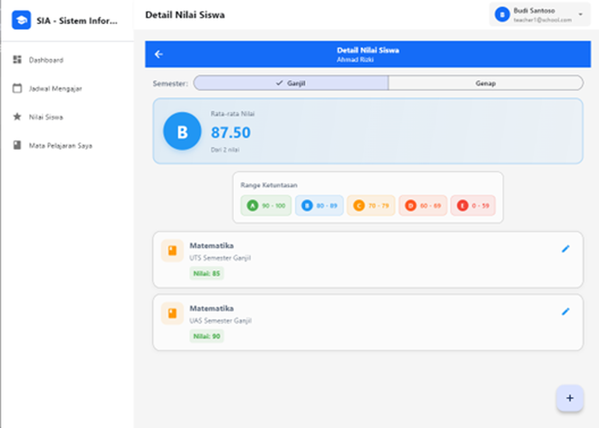

Login JWT, tiga role
Admin, Guru, dan Siswa langsung masuk ke menu dan hak aksesnya masing-masing setelah login.
Microservices · Stateless JWT
Sistem informasi akademik sekolah yang dipecah menjadi dua service FastAPI, saling percaya lewat JWT dengan shared key — tanpa API gateway, tanpa penyimpanan sesi terpusat.

01 — Arsitektur
Skripsi ini menguji apakah sistem sekolah skala kecil bisa berjalan sebagai microservice tanpa API gateway — dengan tiap service tetap bisa di-deploy sendiri.
MVVM + Provider, layar sesuai role
Login, pengguna, menerbitkan token HS256
Verifikasi token secara lokal, tanpa memanggil Auth
Token yang ditandatangani HS256 oleh service Auth diverifikasi sendiri oleh service Akademik — tanpa penyimpanan sesi bersama.
Tiap service punya skemanya sendiri dengan migrasi Alembic terpisah, jadi satu bisa berubah tanpa mengganggu yang lain.
Client memanggil tiap service langsung — lebih sederhana dijalankan, dengan trade-off yang dibahas di skripsi.
02 — Fitur utama
Admin menyiapkan tahun ajaran, guru menginput nilai, dan siswa melihat hasilnya — tiap role hanya melihat layar yang dibutuhkan.
Admin, Guru, dan Siswa langsung masuk ke menu dan hak aksesnya masing-masing setelah login.
Kelola akun, data siswa dan guru, serta penugasan kelas.
Mata pelajaran, jadwal mengajar, dan tahun ajaran, dengan pilihan semester.
Guru menginput nilai UTS dan UAS per siswa dan mapel, lengkap dengan rata-ratanya.
Rata-rata nilai dikonversi ke predikat huruf berdasarkan range ketuntasan.
MVVM dengan Provider untuk state, mengakses kedua service dari satu aplikasi.